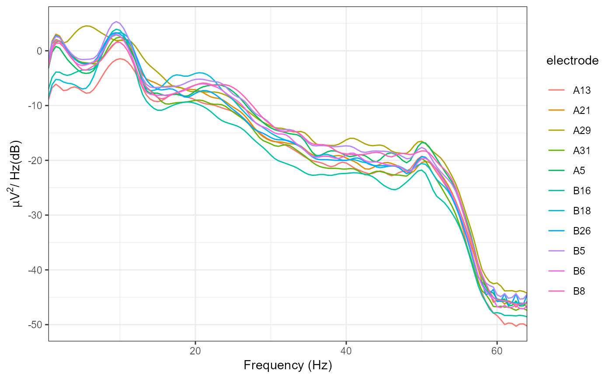
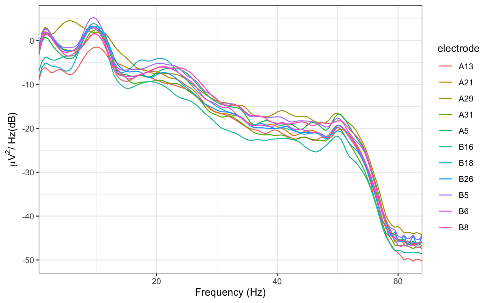

Calculate and plot the PSD for eeg_* objects. Output units are dB. The
PSD is calculated using Welch's method.
plot_psd(data, freq_range = NULL, ...) # S3 method for eeg_epochs plot_psd(data, freq_range = NULL, n_fft = 256, seg_length = NULL, noverlap = NULL, ...) # S3 method for eeg_data plot_psd(data, freq_range = NULL, n_fft = 2048, noverlap = NULL, seg_length = NULL, ...) # S3 method for eeg_ICA plot_psd(data, freq_range = NULL, components = NULL, seg_length = NULL, noverlap = NULL, n_fft = 256, ...) # S3 method for data.frame plot_psd(data, freq_range = NULL, ...)
| data | Object of class |
|---|---|
| freq_range | Vector of lower and upper frequencies to plot. (e.g. c(1, 40)) |
| ... | Additional parameters. |
| n_fft | Number of points to use for the underlying FFTs. Defaults to 256
for |
| seg_length | Length of individual segments. Defaults to n_fft. Must be <= n_fft. |
| noverlap | Amount of overlap between segments, in sampling points. Defaults to 50%. |
| components | Which components to compute the PSD for. Defaults to all. |
Welch's method splits the data into multiple segments and then averages over those segments. For epoched data, Welch's FFT is calculated separately for each trial.
Specific parameters such as the number of FFT points and the amount of overlap between segments can be passed to Welch's FFT
eeg_epochs: Plot PSD for eeg_epochs.
eeg_data: Plot PSD for eeg_data.
eeg_ICA: Plot PSD for eeg_ICA objects
data.frame: Plot PSD for data.frames.
plot_psd(demo_epochs)plot_psd(demo_epochs, seg_length = 256)